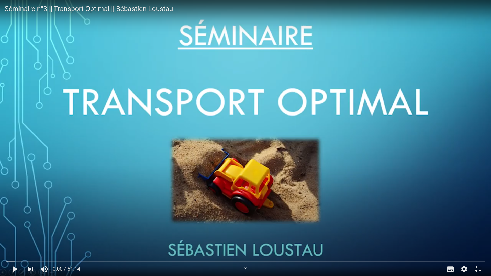

Webpage of Sebastien Loustau
I am Sebastien Loustau, researcher in the laboratory LMAP at UPPA and also involved in the I-Site E2S-UPPA, initiative d'excellence supported by UPPA, INRIA, INRAE and CNRS (see a french marketing video here).
I am also president of the non-profit organization IAPau and the founder of the AI startup LumenAI.
Prior to it, you might have met me in Marseille (Institut de Marseille, previously LATP) where I defended my phd in 2008 under the supervision of the late professor Laurent Cavalier, or in Centrale Marseille or Aix-Marseille 1, where I teached Probability, Statistics and Machine Learning, or more recently in LAREMA, where I defended my Habilitation thesis in 2014 about Online Learning and Inverse Statistical Learning.
My research interests are focused on online learning, mathematical statistics, information theory and more generally mathematical statistics for machine learning. I am interested by techniques that process data on the fly, that have mathematical motivations and theoretical guaranteed, such as excess risk or regret bounds. More recently, I am interested in the applications of these activities to deep learning techniques and environmental challenges.
Why deep learning ? Because many companies, researchers and engineers, have popularized this family of algorithms 10 years ago thanks to really good performances in computer vision and natural langage processing.
Why environmental challenges ? Because nowadays, there is a scientific evidence about the fact that the unprecedented current warming trend is extremely likely to be the result of human activity since the mid-20th century.
Feel free to send me any emails to discuss my work at sebastien[dot]loustau[at]univ-pau.fr.
☝ If you are at the second step of the June 2021 Hiring Process, please, download this file to make your report.
See me on various videos on the web to illustrate my daily work and scientific interests:

Current position
2020-, Researcher at LMAP of the UPPA, chairman of GreenAI UPPA
- Team presentation - Our research encompasses diverse projects and collaborations around the mathematical foundations of power-efficient deep/machine learning algorithms, and the applications of AI to build a more sustainable world. A website about the projects and the current team is in progress.
- Seminars We organize two times a month a meeting to share our daily work and progress. Feel free to join us.
- July, 5th 2021 - Sébastien Loustau - Comment intégrer des contraintes environnementales dans les algorithmes de Deep Learning ?
Résumé : Dans cet exposé, je vous propose d'introduire la théorie PAC-Bayesienne et son lien avec la théorie des jeux pour proposer de nouvelles procédures d'apprentissage séquentiel. Après une introduction simple du problème de prévision avec avis d'experts, on présentera des inégalités PAC-Bayesiennes plus générales et des bornes de regrets parcimonieuses pour des famillles de réseaux de neurones particulières (XNOR-nets notamment). Enfin, on proposera une extension de cette théorie au Transport Optimal pour intégrer de nouvelles pénalités plus génériques et garantir l'intégration de mesures de consommations plus précises.
Cet exposé est une introduction aux principales motivations de ces articles : Learning with BOT et Sparsity regret bounds for XNOR-Nets .
- July, 26th 2021 - Julien Mercier (UPPA) - Comment intégrer de la binarisation de réseau dans les algorithmes de deep learning ?
Résumé : Au cours de cette présentation, je vous propose d’introduire les avantages et inconvénients de la binarisation. Pour cela nous évoquerons l’algorithme BinaryConnect ainsi que BinaryNetwork et nous présenterons comment et pourquoi ils ont été binarisé.
- August, 23th 2021 - Paul Gay (UPPA) - Measuring the Power draw of computers
Résumé : Inventer de nouveaux algorithmes économes en énergie passe par la mesure de leur consommation électrique. Ces dernières années voient un regain d’intérêt pour mesurer la consommation des centres de calcul, et plus précisément, pour mesurer la consommation électrique des modèles d’IA. Dans ce séminaire, je présenterai les possibilités des outils existants tels que RAPL et NVIDIA-SMI en soulignant leur dépendance avec le type de processeurs ou de cartes graphiques dont la consommation est mesurée. Nous étudierons ainsi briévement les différentes architectures d’ordinateurs afin d’identifier les différentes sources de consommation. L’objectif final est de permettre aux participants de mesurer la consommation électrique de leurs propres algorithmes par l’intermédiaire du logiciel “deep_learning_power_measure” développé au sein de l’UPPA.
Past positions
List of selected publications
- Chee, A. and Loustau, S. - Learning with BOT - Bregman and Optimal Transport divergences, 2021 HAL repository,
- Chee, A. and Loustau, S. - Sparsity regret bounds for XNOR-nets++, 2021 HAL repository,
- Li, L., Guedj, B. and Loustau, S. - A quasi-Bayesian perspective to online clustering, Electron. J. Statist., 12(2): 3071–3113. 2018,
- Darmaillac, Y., and Loustau, S. - MCMC Louvain for Online Community Detection, 2017 https://arxiv.org/abs/1612.01489
,
- Chichignoud, M. and Loustau, S. - Bandwidth selection in kernel empirical risk minimization via the gradient, Ann. Statist., 43(4): 1617-1646. 2015,
- Loustau, S. and Marteau, C. - Minimax fast rates for discriminant analysis with errors in variables, Bernoulli, 21(1): 176-208. 2015,
- Chichignoud, M. and Loustau, S. - Adaptive noisy clustering, IEEE Transactions on Information Theory, 60 (11), 7279-7292. 2014,
- Loustau, S. - Inverse statistical learning, Electronic Journal of Stats, 7: 2065-2097. 2013,
- Loustau, S. - Penalized empirical risk minimization over Besov spaces, Electronic Journal of Stats, 3: 824-850. 2009,
- Loustau, S. - Aggregation of SVM classifiers using Sobolev Spaces, Journal of Machine Learning Research, 9: 1559-1982, 2008.
List of recent talks
- Comment intégrer des contraintes environnementales dans l'apprentissage profond ?, PFIA'21, track Nouvelle-Aquitaine, invitation Nicolas Roussel, juillet 2021 program here,
- IA et réchauffement climatique, Conférence de vulgarisation au Lycée Louis Barthou, mai 2021 vidéo ici et un article ici.
- Power efficient Deep Learning, AI4Climate workshop, invitation Julien Brajard , oct 2020 download slides here,
My phd is also available here and my habilitation thesis here.